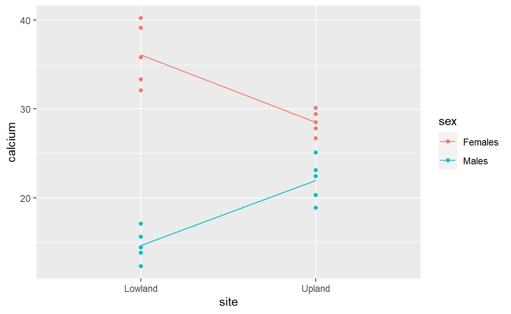

Multiple explanatory variables
Interactions
When you have multiple explanatory variables they may not always be independent of each other, and they ‘interact’ in some way. This means that the effect of one explanatory variable on the response also depends on the value of the other explanatory variable. These interactions can arise when all your explanatory variables are categorical, when they are all continuous, or where you have a mixture of categorical and continuous explanatory variables.
Example with categorical explanatories
The amount of calcium in blood plasma samples (mg / 100 ml) was measured in male and female rabbits, half sampled from a lowland intensive arable farm, and half from an upland mixed farm.

As usual it is useful to plot the data before analysing them. As we have categorical variables, a boxplot is informative, but we can easily colour code the boxes two show all four combinations in one plot:
gf_boxplot(calcium ~ site, color= ~ sex, data=plasma)Key points
- Use the
colour= ~sexoption ingf_boxplot()to arrange the colour-coding. - You could easily put gender on the x-axis, and colour-code by lowland/upland
- Calcium levels appear to be lower in males than females
- The difference between males and females appears to be bigger at lowland than upland sites
It is that last point that is critical. Indeed, if you were to a draw line connecting the two boxplots for the males and a second line connecting the two boxplots for the females, the gradients of those lines would not be parrallel. This suggests non-independence, i.e. an interaction is present.
How to test for an interaction
It is easy to test whether an interaction occurs, by adding a third explanatory variable. Your original model is:
\[Response = Explanatory1 + Explanatory2 +
Error\] which is modified to: \[Response = Explanatory1 + Explanatory2 +
Interaction + Error\] For this rabbit example, the latter is
therefore: \[calcium = site + sex + site\
sex\ interaction + Error\] This can easily be entered into the
lm function, using the : operator to define
the interaction term. Put the interaction term last.
calcium_lm <- lm(calcium ~ site + sex + site:sex, data=plasma)
Anova(calcium_lm)You can see from the ANOVA table indicates that:
- the
sitemain effect is not significant as P=8.985896e-01 = 0.896. There is no difference in the average calcium at the upland and lowland sites - the
sexmain effect is significant as P=0.000000000678 < 0.001. There is more calcium in the blood of females than males - the
site:sexterm is significant as P=0.00000356 <0.001. The amount of calcium depends on both site and gender
That last bullet point might seem confusing at first. If
site on its own is not significant, how can the interaction
site:sex be significant? Let’s look at the three components
and plot them
# Main effect for site
gf_boxplot(calcium ~ site, data=plasma)# Main effect for sex
gf_boxplot(calcium ~ sex, data=plasma)# Show original data, and lines connecting the two sets of means
gf_point(calcium ~ site, colour= ~sex, data=plasma) %>%
gf_line(calcium ~ site, colour= ~sex, group= ~sex, stat="summary", data=plasma)## No summary function supplied, defaulting to `mean_se()`
Key points
- The boxplots for site overlap considerably, hence non-significant
sitemain effect - Boxplots for sex show little overlap, hence significant
sexmain effect - lines connecting the means for the two groups are not parallel hence significant interaction term
Should I drop the non-significant site main effect from the model?
You might be wondering whether you should omit the site
main effect and have a model that consists only of the sex
main effext plus the sex:site interaction:
\[calcium = sex + site\ sex\ interaction +
Error\] There is not a consensus amongst statisticians on this
issue, but I would advise retaining it if the interaction is
significant. If you want to simplify a model down to its
simplest form, always look at the interaction term
first. If the interaction is non-significant, then you are
justified in re-running the model without the interaction, and looking
at the main effects. However, if the interaction is significant, I would
recommend that you keep all the main effects, even ones, like
site, that are non-significant.
Interactive demonstration
Simulating main effects and interactions
This interactive demonstration allows you to modify the relative importance of the two main effects from the rabbit example (sex and site) and the interaction term. Adjust the sliders to change the importance, and note the differences in the resulting graph, and ANOVA table from the linear model.
Note
- A slight randomisation is used in changing the data, therefore you will not obtain exactly the same results for any given setting of the sliders. However, they will be roughly similar.
- I suggest you start by reducing the slider for the interaction term to zero, and adjust the two main effects. Once the interaction comes into force it can be more difficult to interpret.
Understanding interactions
Key points to note:
- When there is no interaction the lines are roughly parallel
- Try setting the interaction to zero and one of the main effects to zero.
- Note how the bigger a main effect, the more the males/females separate, or the more the difference between uplands and lowlands
- When the interaction is high it is more challenging to interpret what is happening!!
Continuous and categorical variables
We can use continuous and categorical data in the same linear model
to test whether a relationship between two continuous variables is
different depending on different levels of a categorical variable. This
type of linear model can help us compare the intercepts and slopes of
two or more regression lines. This type of analysis is sometimes
referred to as Analysis of Covariance (ANCOVA). You may find the
categorical explanatory variable refereed to as a factor and a
continuous explanatory variable sometimes called a covariate. The
combination of these two explanatory variables can include an
interactions. A linear model with continuous and categorical explanatory
variables still uses the lm() function. The analysis
compares the difference in the means of two or more levels of the
categorical explanatory variable whilst adjusting for the continuous
explanatory covariate but only when the lines are parallel. The key
concept here is that the analysis can test whether there are differences
in the gradient of the relationship between response variables and the
continuous explanatory variable for multiple levels of the categorical
variable.
For example, if we collect fish from two different locations (e.g. NW and SE), measure their standard lengths and analyse the biochemical composition of their tissue (d13C), we can test whether the gradient and elevation of the lines are significantly different.
In doing this type of analysis it is important to plot your data first.
# plot data first
gf_point(d13c ~ standard_length, col = ~area, data = anr) %>%
gf_theme(theme_classic()) %>%
gf_lm(d13c ~ standard_length, col = ~area, interval = "confidence", data = anr) %>%
gf_labs(x = "Standard length (mm)", y = "d13c per mil")You can see from the figure that the samples taken from the SE location appear greater than the NW and so is the line we have plotted through our data but are the locations significantly different?
We can then undertake the analysis the same as previously using
lm() function as we have done in the practicals.
# create the linear model using `lm`
m1<-lm(d13c ~ standard_length + area, data = anr)
# look to see whether the variables in the model are significant
Anova(m1)# we we still need to check whether the assumptions are met
anr_resid <- residuals(m1)
gf_qq(~anr_resid) %>%
gf_qqline()In this example, we have assumed that the two lines are parallel
(i.e. have equal gradients) and that there is no interaction between
standard_length and area. It is good practice
to test for an interaction first. We can look more closely at the
results by using summary() and find the coefficients for
the intercepts and gradients of the lines as well as whether they are
significant.
summary(m1)The table is a combination of what you have seen already when interpreting the linear models with continuous variables and linear models with categorical variables.
The table can be interpreted as follows for those data from the NW area:
intercept=-20.812942- gradient of the line =
0.003331
The interpretation for the SE area is very similar except that the intercept is different:
intercept=-20.812942+0.446764- gradient of the line =
0.003331
The intercept for the SE area is ~0.4 per mil higher
than the NW station. You can see this in the figure where the blue SE
line is higher than the red NW line.
You will find that for Two-way ANOVA with unbalanced data and for
ANCOVA, the most accurate F-values are calculated by using the
Anova() function from the car package which
uses Type-II Sums of Squares.
Fitting curves
Using 2 explanatory variables to fit curves
Sometimes you may want to fit a curve rather than a straight line to your data, and with very simple datasets this can easily be done by creating a second explanatory variable derived from the original. This is easiest to explain by an example.
You have undertaken an experiment to investigate the growth rate of common ryegrass Lolium perenne in a glasshouse experiment with soils with different water content. Unsurprisingly, growth rate is poor in very dry soils, but it also declines again in very wet soils.

Go ahead and fit a standard linear model. Check its
summary table, and also look at the model diagnostics, in
particular the QQ-plot, and how the model residuals change with
predicted (fitted) growth rate.
Hints
- The exercise contains a data.frame called
loliumwith two columns,growthandwater. - Use the
lm()function to create your model, andsummary()to display intercept, gradient, R-squared etc. - Use the
plot()function of your model object; this will create 4 plots, but focus on the first (Residuals vs Fitted) and second (QQ plot)
# Create a simple linear model and check its summary statistics
lolium_lm1 <- lm(growth ~ water, data=lolium)
summary(lolium_lm1)
# The plot function displays 4 plots. You are most interested in the first two
plot(lolium_lm1, which = 1:2)Interpretation
Whilst you have a significant model, that explains almost 40% of the variation based on the R-squared, it is obvious that something is wrong. The fitted vs residuals plot shows a steep curve, whereas ideally they should be scattered randomly. The standardised residuals in the QQ plot does not follow the expected theoretical quantiles very well. These both suggest your model is poor. Finally, we can plot the predicted model line
# Display raw data and predicted line
gf_point(growth ~ water, data=lolium) %>%
gf_lm()Hopefully you can see that a straight line is not very good for these data.
Fitting a quadratic
A straight line regression model such as this can often be described as:
\[ y = a + b.x + Error\] where
\(y\) = response variable (growth)
\(a\) = interecept of fitted line on
y-axis (26.0 from your summary()) \(b\) = the gradient of the line (0.194 from
your summary()) \(Error\)
= unknown noise around your line.
We can easily modify this equation by adding an additional x predictor that is simply the square (raised to 2) of the original x:
\[y = a + b.x + c.x^{2} + Error\] An additional coefficient, \(c\) is now calculated. This will typically be a very small value, in this example with a negative sign. This means that when water content is low, the \(c\) value will do little. For example when water content is 5%, water content-squared is only 25. However, the effect of water content goes up very sharply with high values: e.g. when water content is 75, water content-squared is 5625. This will have the effect of ‘pulling’ your fitted line back down.
We can try it now. To tell R that you want to square a value in the
lm() function, you need to enclose it in the
I() function, to indicate that this is what you intend to
do. You can raise a variable to the power of 2 by using
^2:
# Original linear model
lolium_lm1 <- lm(growth ~ water, data=lolium)
summary(lolium_lm1)##
## Call:
## lm(formula = growth ~ water, data = lolium)
##
## Residuals:
## Min 1Q Median 3Q Max
## -14.968 -1.184 1.505 5.221 7.284
##
## Coefficients:
## Estimate Std. Error t value Pr(>|t|)
## (Intercept) 26.00000 3.26282 7.969 3.85e-07 ***
## water 0.19368 0.05723 3.384 0.00353 **
## ---
## Signif. codes: 0 '***' 0.001 '**' 0.01 '*' 0.05 '.' 0.1 ' ' 1
##
## Residual standard error: 6.832 on 17 degrees of freedom
## Multiple R-squared: 0.4025, Adjusted R-squared: 0.3674
## F-statistic: 11.45 on 1 and 17 DF, p-value: 0.003527# Include both water and water-squared
lolium_lm2 <- lm(growth ~ water + I(water^2), data=lolium)
summary(lolium_lm2)##
## Call:
## lm(formula = growth ~ water + I(water^2), data = lolium)
##
## Residuals:
## Min 1Q Median 3Q Max
## -4.3641 -2.0913 -0.2979 2.4090 5.3820
##
## Coefficients:
## Estimate Std. Error t value Pr(>|t|)
## (Intercept) 10.716202 2.325304 4.609 0.000291 ***
## water 1.067044 0.107080 9.965 2.88e-08 ***
## I(water^2) -0.008734 0.001040 -8.395 2.95e-07 ***
## ---
## Signif. codes: 0 '***' 0.001 '**' 0.01 '*' 0.05 '.' 0.1 ' ' 1
##
## Residual standard error: 3.029 on 16 degrees of freedom
## Multiple R-squared: 0.8895, Adjusted R-squared: 0.8756
## F-statistic: 64.37 on 2 and 16 DF, p-value: 2.23e-08Key things to note from above
- The R-squared, which is the percentage variation explained by the model, has jumped from 36.7% to 87.6%
- Three coefficients are produced in the more complex second model
lolium_lm2. These are for the intercept, water, water\(^2\). As expected the water\(^2\) coefficient is very small and negative (-0.008) but nevertheless highly significant (P = 0.000000295, report as P<0.001) - The second model
lolium_lm2is more complex, and we generally want to use the simplest model possible. However you can see all three of its predictors are highly significant, and it makes better biological sense too.
You can view the predicted line and see the improvement. Simply add
the overall structure of your model (in y ~ x + I(x^2)
syntax to the gf_lm() function. We have also used the
interval = "confidence" option to add 95% confidence
intervals around our fitted line:
gf_point(growth ~ water, data = lolium) %>%
gf_lm(formula = y ~ x + I(x^2), interval = "confidence")Polynomial curve fitting: be cautious
The type of linear model you have just fitted is often called a
quadratic model, as it contains the original, and
squared terms for predictors. There is nothing to stop you fitting
x^3, or x^4 terms to fit more and more complex
curves. However, be very cautious about fitting such general
polynomial models, as the x^3 or
x^4 terms are unlikely to have any biological meaning.
Handling regular patterns over time
Sometimes you might have data that shows a regular rise and fall, e.g. temperature data recorded every hour over the course of several weeks. To analyse such data you might want to remove the daily cycle, so that you can study other effects. Using the sine and cosine of your explanatory variable (hour of day) can be an effective trick. Simply create a model of the form:
\[temperature = sine(\frac{2 \pi}{24.hr}) + cosine(\frac{2\pi}{24.hr}) + Error\] Similar methods can be used if working with weekly data (divide by 52.week number) or monthly data (divide by 12.month number)
If you encounter cyclical data that fluctuates on a daily, weekly, monthly or annual basis either in Stage 2 or Stage 3 then contact me and I will help you to analyse it.
Summary
When you have multiple explanatory variables, key things to remember include:
- checking for interactions. Look at the interaction term first - if it is significant then retain all predictor variables
- you can fit curves with multiple predictors, using quadratic or ‘polynomial’ approach
- if you have two categorical explanatory variables but unbalanced
data, use the
Anovafunction from thecarpackage. If you have a mixture of categorical and continuous predictors you would need to use theAnovafunction. This is because it uses Type III sums of squares, which are insensitive to the order in which you provide the explanatory variables. - If you have one categorical and one continuous explanatory
(sometimes called “ANCOVA”) then always use the
Anova()function.